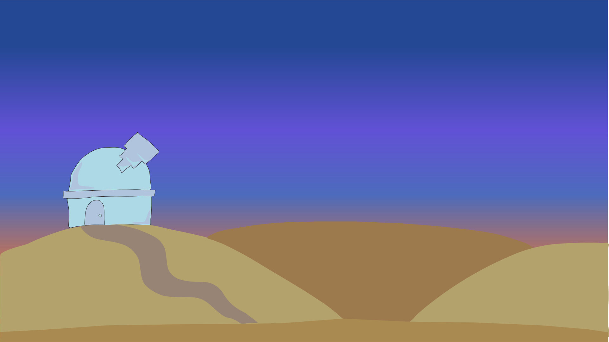

Grundlæggende Animation
Opgave
Animationsforløbet blev inddelt i forskellige faser. Den første del af temaet er den indledende fase som tager udgangspunkt i koncept og ide til spillet. Ud fra de skitserings- og idegenereringsteknikker blev der udarbejdet de grafiske elementer, heraf baggrund, spilelementer, UI-elementer. Alle elementer er gemt ned i svg-filer (scalable vector graphics), der muliggør fleksibel skalering af grafikken i forskellige størrelser til diverse formål.
Skitser
Farver

Figurer
Meteor Mission
Undgå stjerneskuddene og få ram på meteorerne inden de rammer jorden. En videnskabsmand står med sin stjernekikkert, og ser at der falder meteorer ned fra himlen. Hjælp med at skyde meteorerne ned ved at klikke på dem inden de rammer jorden.
Ide
Ideen til spillet “Meteor Mission,” kom på baggrund af kriterierne om at det "gode" og det "onde" skulle være udgangspunktet i spillet. Jeg skitserede et stjerneskud og en meteor, som blev spillets setting. Videnskabsmanden og observatoriet gav derfor mening med stjerneskuddene og meteorerne til at danne et passende univers.
Inspiration
Gennem research og på baggrund af min valgte stil "Flat Design," blev jeg inspireret til hvordan spillet skulle skitseres og designes.
Valgt Stil
Jeg har valgt at udvikle mit spil med stilen Flat Design 2. Spillet har dermed det enkle og flade udtryk samtidig med at elementerne ingen tredimensionelle egenskaber har. Karaktererne og baggrunden får derfor en tegneserie stemning gennem min valgte stil. Selve billedet er opdelt i tre dele for at skabe en tydelig setting - altså for- mellem- og baggrund. Former og farver er enkle og lette, hvilket gør navigationen tydelig og nem for brugeren. Der lægges vægt på en lille mængde indhold i spillet, da det ikke er nødvendigt med overflødig grafik.
Baggrundsskærm
Level Complete

Game Over

Aktivitetsdiagram

Undgå stjerneskuddene og få ram på meteorerne inden de rammer jorden. En videnskabsmand står med sin stjernekikkert, og ser at der falder meteorer ned fra himlen. Hjælp med at skyde meteorerne ned ved at klikke på dem inden de rammer jorden.
Hvis man klikker på et stjerneskud, mister man et point.
Klikkes der på en af meteorerne, får man et point.
Når man ikke at klikke på meteorerne inden de rammer jorden mister man et liv.
Spillet varer 20 sekunder, man har 3 liv, og det gælder om at få 15 point for at vinde.
State Machine Diagram

State Machine Diagrammet illustrerer hvilke funktioner der gør jeg gældende i mit spil. Hvordan det er bygget op, hvad der sker når meteorer og stjerneskud falder ned fra himlen. Diagrammet udgør dermed en guide til Java Script, hvor man nemt kan se spillets opbygning.